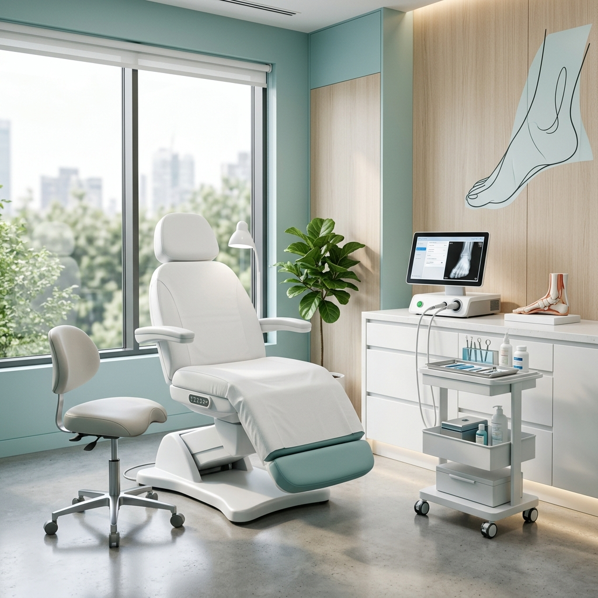
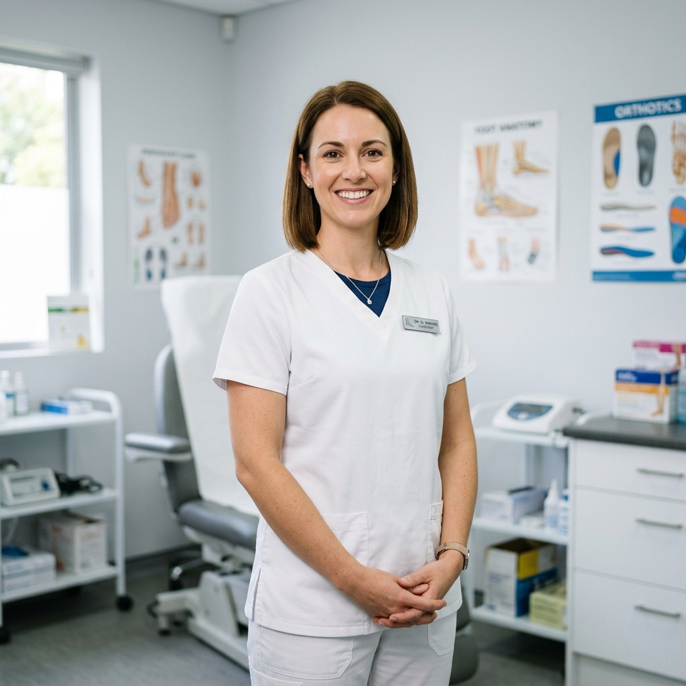

Excelência em Saúde Ungueal
Tratamentos de alta complexidade que devolvem sua liberdade de caminhar. Tecnologia alemã aliada ao cuidado humanizado.
Tratamentos Especializados
Soluções definitivas para as patologias mais desafiadoras dos pés.
Ortonixia Avançada
Correção de unhas encravadas sem cirurgia, utilizando órteses de tração que reeducam o crescimento.
Saber maisOnicomicose
Protocolos exclusivos para eliminação de fungos, com foco na regeneração total da lâmina ungueal.
Saber maisPé Diabético
Cuidado preventivo rigoroso para evitar lesões e garantir a integridade da saúde vascular dos pés.
Saber maisLaserterapia
Tecnologia de ponta para cicatrização rápida, alívio de dor e combate a infecções persistentes.
Saber maisResultados Reais
A transformação que nossos pacientes experimentam após o tratamento especializado.

Elenilda Ramos (Lena)
Formada com excelência e em constante atualização técnica, Lena Santos dedica sua carreira a resolver problemas complexos que afetam a qualidade de vida de seus pacientes.
Especialista em Órteses
Técnicas avançadas de tração ungueal.
Biossegurança Total
Esterilização em autoclave de grau cirúrgico.
Como Funcionamos
Avaliação Clínica
Análise profunda da patologia e histórico de saúde.
Plano de Tratamento
Definição das técnicas e número de sessões necessárias.
Execução e Acompanhamento
Procedimentos precisos e suporte pós-atendimento.
Venha nos visitar
Localização privilegiada em Taguatinga, com estacionamento e acessibilidade.
- Taguatinga, Distrito Federal - Brasília
- (61) 98542-0649
- Segunda a Sexta: 08h às 18h